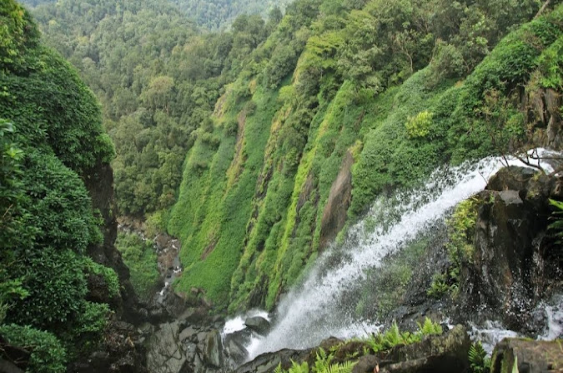

Onake abbi falls

Onake Abbi is a breathtaking waterfall located in the Western Ghats of Karnataka, India. Also known as Onake Abbe Falls, it is nestled amidst the dense forests near the village of Agumbe in the Shimoga district. The waterfall is renowned for its stunning beauty and pristine surroundings, making it a popular destination for nature lovers and adventure seekers.
Onake Abbi cascades down from a height of approximately 200 feet, creating a mesmerizing spectacle as it plunges into a pool below. The name "Onake Abbi" translates to "Pounding Pestle Falls" in the local Kannada language, which aptly describes the forceful impact of the water on the rocks resembling the pounding of a pestle in a mortar.To reach Onake Abbi, visitors often embark on a short trek through the lush greenery of the Western Ghats.
Agumbe Hills
Agumbe is a picturesque village nestled in the Western Ghats of the Shimoga district in Karnataka, India. Often referred to as the "Cherrapunji of the South" due to its high rainfall, Agumbe is renowned for its lush greenery, misty landscapes, and breathtaking sunsets. Situated at an altitude of approximately 826 meters above sea level, it serves as a gateway to the dense rainforests of the Western Ghats and is a haven for nature lovers, wildlife enthusiasts, and adventure seekers.
One of the prominent attractions in Agumbe is the Agumbe Rainforest Research Station (ARRS), which is dedicated to the study and conservation of the region's rich biodiversity. The rainforests surrounding Agumbe are home to a wide variety of flora and fauna, including several endemic and endangered species. Visitors to ARRS can learn about the unique ecosystems of the Western Ghats and participate in guided nature walks and research activities.
Someshwara wildlife sanctuary
Someshwara Wildlife Sanctuary is a protected area located in the Udupi district of Karnataka, India. Covering an area of approximately 88 square kilometers, the sanctuary is nestled amidst the Western Ghats and is characterized by its diverse ecosystems, including tropical evergreen and semi-evergreen forests, moist deciduous forests, and grasslands. The sanctuary is named after the Someshwara Temple, an ancient Hindu temple dedicated to Lord Shiva, which is located within its boundaries.
Someshwara Wildlife Sanctuary is renowned for its rich biodiversity and is home to a wide variety of flora and fauna.The sanctuary provides habitat to several threatened and endemic species, including the Malabar giant squirrel, lion-tailed macaque, Indian pangolin, Malabar pit viper, and king cobra. It is also a haven for birdwatchers, with over 200 species of birds recorded in the area, including the Malabar trogon, great hornbill, and Malabar pied hornbill.